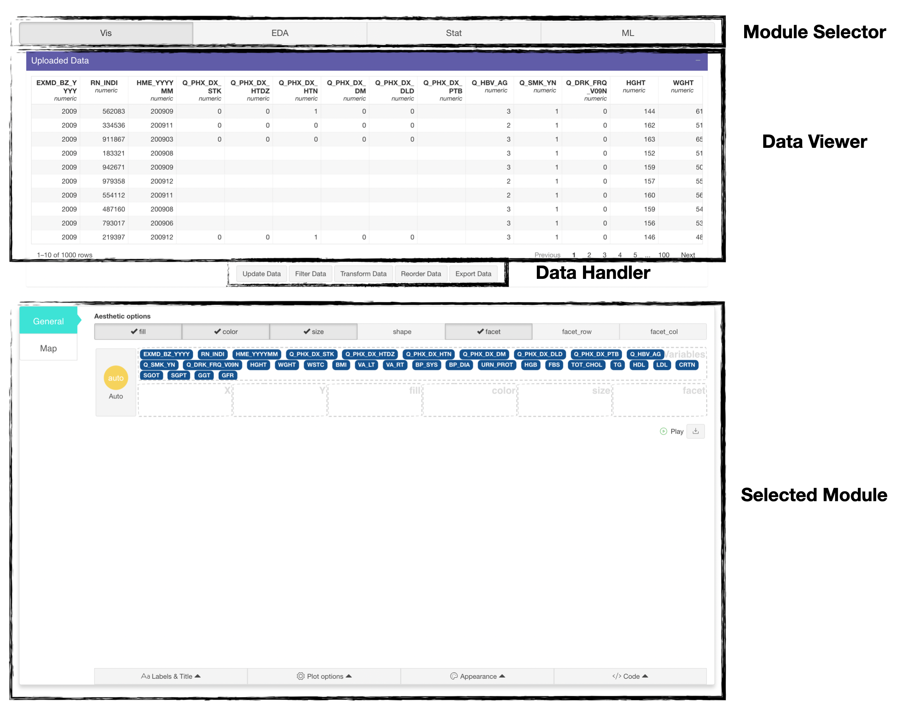

Introduction
door is core shiny application of statgarten for
EASY-data analysis.
door is consists with 4 + 1 functions.
- Data Import
- Data Visualize (see colorpen)
- Data Profiling (see board)
- Statistical Data analysis (see soroban)
- Machine Learning (see stove)
In this article, we introduce how to Import (or upload) dataset for analysis.
This article is based on 0.1.7 Version of door
Getting Started
When you run door (by door::run_app())
You will see image like below.

Import part is consisted with 3 part.
- Language selection: You can choose either english or korean. (some may not support korean yet, let us know by creating issue )
Other languages may be added in further, but not soon.
i button is designed for guide (it’s experimental, not usable yet.)
- Type of data: door supports 4 types.
Files (Local). You can upload your PC’s file by
dragor clickingBrowsebutton.URL (Web). You can paste URL of data.
Google Sheet. Also supported, you must check data can be access for public.
Datatoys. In case of you don’t have any data, statgarten curated Public data from Public data portal in Republic of Korea. For more information, visit datatoys repository
Also for each type, there are different options.

- In Files, trip, encoding, decimal separator is provided.
-
doorsupports 13 type of format.
In URL, test data exists, (which may removed in further version)
doormainly utilize datamods for data import, so you may interest to datamods description
- Import module: it changes as user select type of data.
Experimental PART
- Guide

Under import module, there’s carousel-like component which is consider to provide guide to door user.
and it’s in development process (which may removed or used).
Exploring Modules

door shows 1 + 1 modules for each function.
that is uploaded Data (it will show in every module)
and selected module (like Vis) which consisted of tabsetpanels.

Reports

by using Dataset Description function in
EDA module.
You can download data profile with various format. (content will same)
For more information, you can refer Report article
Module’s provided function
door utilize other packages include statgarten’s and
each of them has description for functions.
door for Mobile user.

We don’t recommend using door with mobile phone (especially for ML since it requires hard computation).
However, you can still use with mobile. some component’s layout will not work efficiently but functionality doesn’t effected.
Usecase
See Usecase articles. (on process)
For any issue or suggestion, please make issue in door’s github.